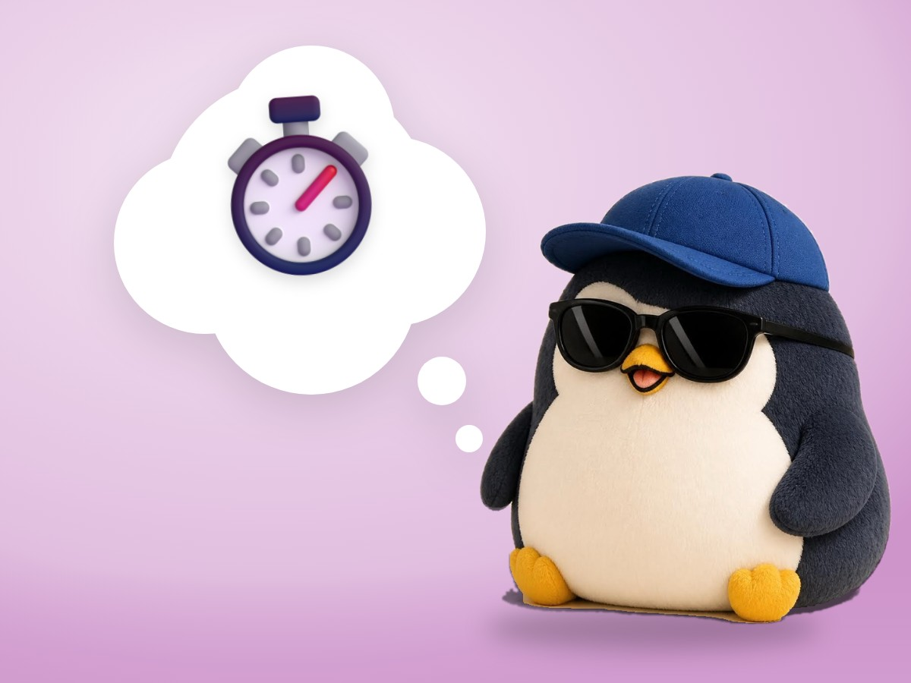

📝 DRAFT · 下書き — まだ本番に出していません · 下書き一覧
🐧 EVERYDAY LIFE⚡ 19 SEC
A slow answer often means a topic they do not want to talk about ⏱️

Slow Means No
It seems the slower the answer, the less they want to talk about that topic.
Three Signs
There are 3 signs: "Hmm, uh…", "Huh, what?", and an unclear answer.
⚡ TRY IT
Read the signs
Ask a question. Watch how fast the answer comes.
QUESTION 1/4
🍜 "Do you like ramen?"
📝 "How was your test?"
✈️ "Any trip plans?"
🧹 "Is your room clean now?"
👇 Tap "Ask".
…
"Yes! I eat it every week!"
"Hmm, uh… well… it was… OK?"
"Yes! Korea, next month!"
"Huh, what? …My room?"
⚡ fast🐢 slow
⏱️ Reply time: 0.0 sec
✅ Nice! They love this topic. Ask away!
✅ Good catch! You changed the topic. Phew.
😬 Ouch… they did not want to talk about that.
😅 Oh! They wanted to talk more about it.
0/4🏆 Signs you read right. Fast answers: ask more. Slow answers: change the topic.
By the Way
If you notice it, change the topic with "Oh, by the way…"
And remember that topic for next time.
Fast Means Go
If the answer comes back fast, you can ask more and more.
📚 I learned this from the Japanese blog "Panda no Ondo".